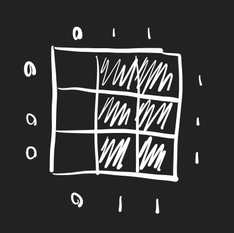
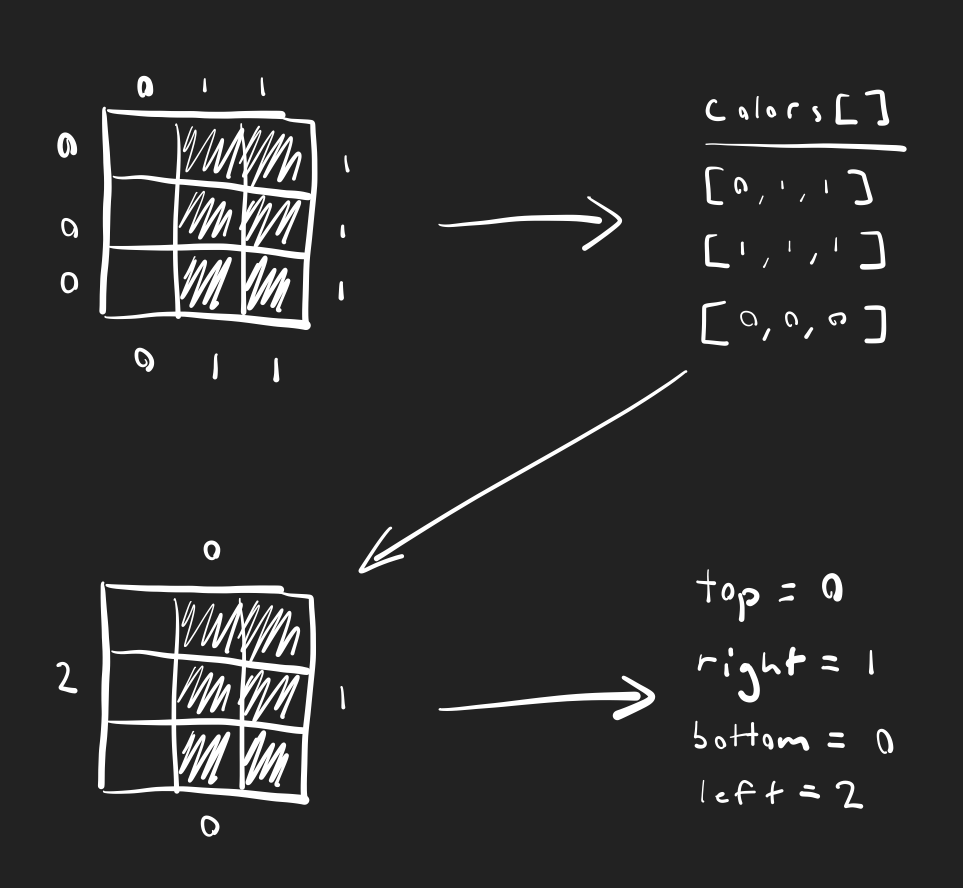

The WFC Tile Generator
The tile generator of wfc is one of the first systems which runs, and its purpose is to break up an input image into usable tiles with additional data about their edges.
It first breaks up the image into NxN tiles, where N is just a variable passed to wfc to tell it how big the tiles should be (3 is a good default), and saves each tile as an image. I'm using Lua, which allows me to store each tile as a table with values for the image, edge data, and other important information, but there are analogues to the structure I have in almost any language. Something important to note here is that we are generating overlapping tiles. This means that the pixels on the edge of each tile are the same as the tile next to it. This is important because when we stitch the tiles together at the end of the algorithm, we want to make sure that the resulting image looks seamless.
Now that we have tiles, we need to process them to get data which will be used later. To start, we check if there are redundant images, and if there are we remove the redundancies but keep track of how many duplicates there were. This will serve as a weight for the observer system later (the concept of a weight will be explained in that article). Additionally, now is when we check the edges of each tile to process the color information. For each tile, we check the color of the top, bottom, left, and right sides, and for each side we make a list of colors. After ensuring that the list is unique, we can then assign each side of each tile a single number which corresponds to the index of its colors in the list of colors.
For example, if we have a simple black and white tile:
we'll iterate over the edges to produce a list of unique color combinations
the indices of which will then be used to label the edges of the tile
This allows us to compare simple integers when we want to check if two tiles can be adjacent, instead of going through potentially large lists of rgba values.
And that's pretty much it for the tile generator! While this is one of the more straight-forward systems, I found that it took a while to figure out what form to put the data in for later use, as most articles sort of breeze over this part. The end goal is to have a weighted list of unique tiles with single-integer color data for all four sides, though if you find some other structure more efficient or understandable by all means use that.
(Also, wow its been a long time! It's good to be back, and I think I'll use drawings in future posts; I liked how they turned out)